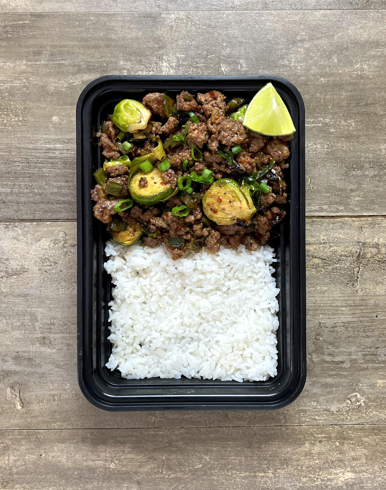

Firecracker Beef and Brussel Sprouts

Description
Recipe from the meal prep manual of a spicy and sweet ground beef with brussel sprouts
Ingredients
For the Rice
For the Beef and Brussels
- Ground Beef
- Brussel Sprouts
- Onion
- Poblano Peppers
- Minced Garlic
- Red Pepper Flakes
- Green Onions (optional)
- Lime (optional)
- Oil
For the Sauce
- Hot Sauce
- Apple Cider Vinegar
- Honey
- Cornstarch
Steps
- Cook rice
- Wash and cut vegetables
- Cut stems off brussel sprouts and remove damaged outer layers
- Cut onions, green onions, and peppers into a small dice
- Place brussel sprouts into a large bowl and drizzle oil
- Preheat airfryer to 400 degrees
- Place brussels into airfryer for 5-8 minutes
- In a large skillet over medium high heat add beef
- After half way cooked add vegetables
- Prepare sauce by mixing all ingredients
- When beef is 90% of the way done add sauce
- Serve